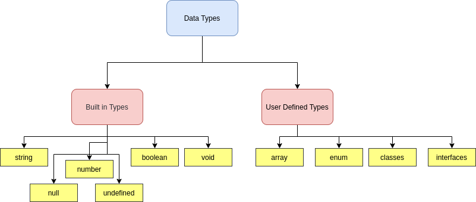

Understanding TypeScript Types
2025-10-10
TypeScript is not a magic tool, it is a practical one. It helps you state what your code expects so you get fewer surprises at runtime. Instead of guessing whether a value is a string or an object, types make those expectations explicit.
At first types feel like extra typing, but they save time later. You catch bugs earlier, your editor gives better suggestions, and collaborating with others becomes smoother because the code communicates its intent. After a little practice, writing with types starts to feel natural rather than annoying.
← Back to Blog